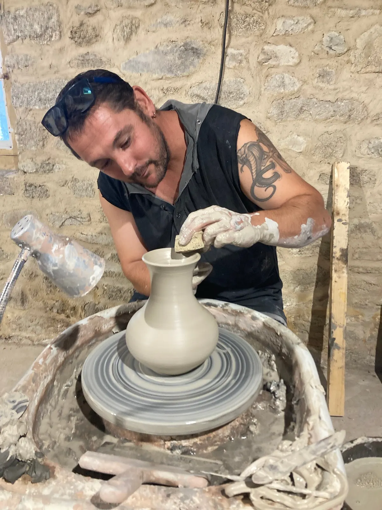
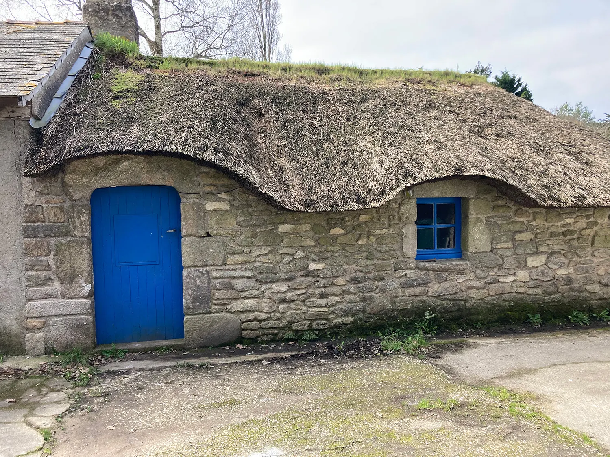
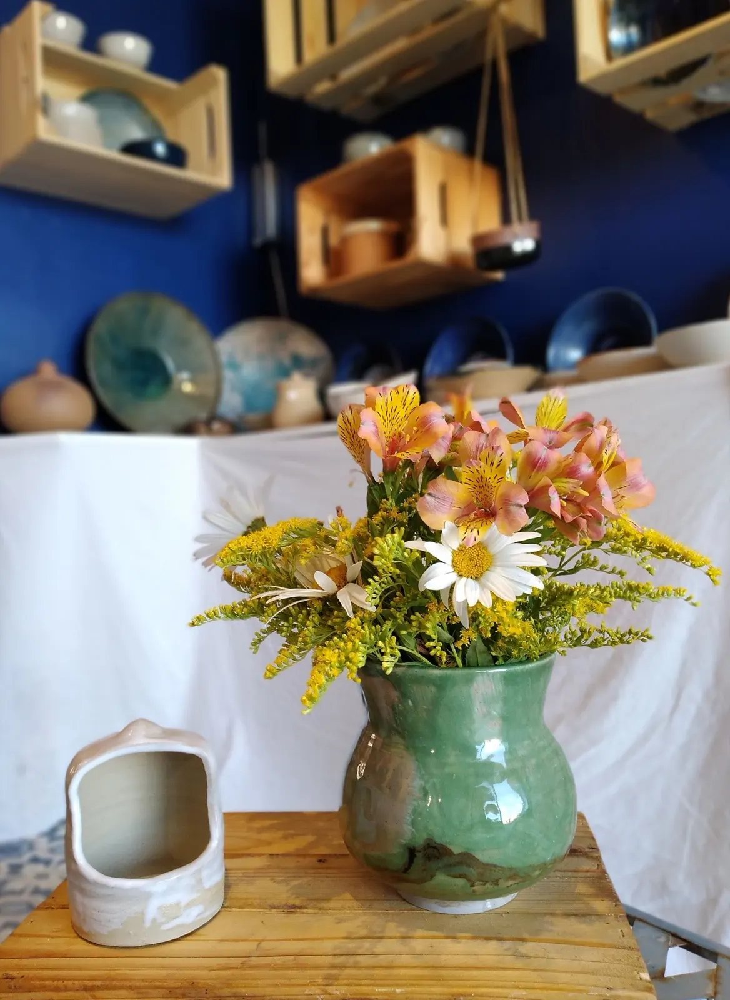
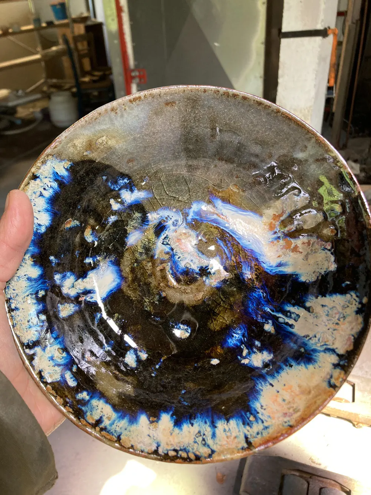
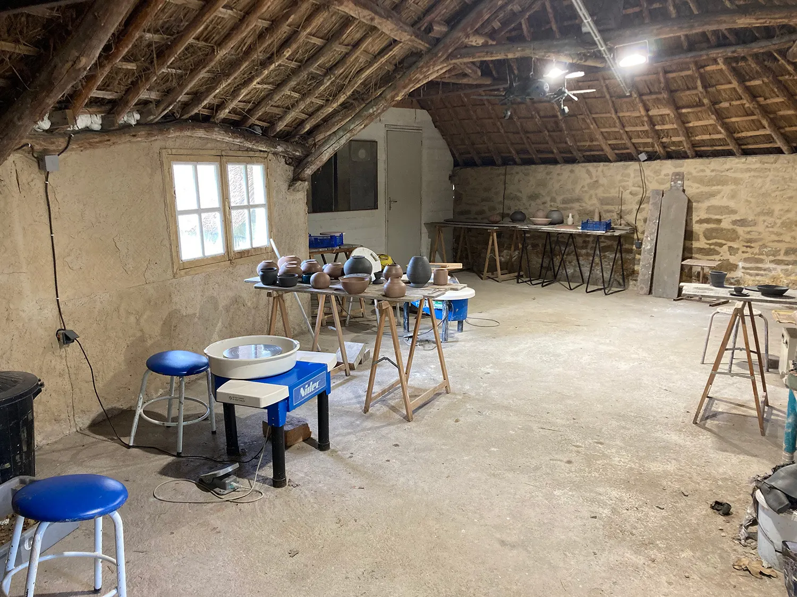
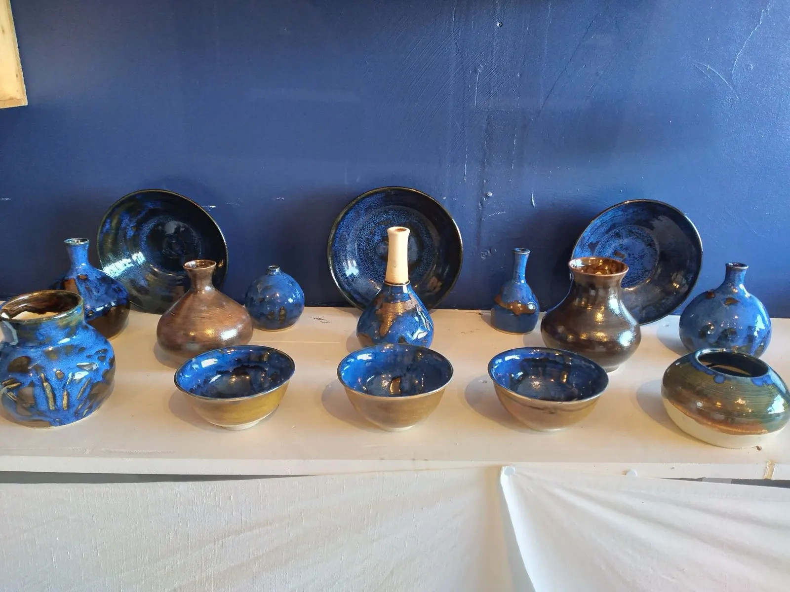
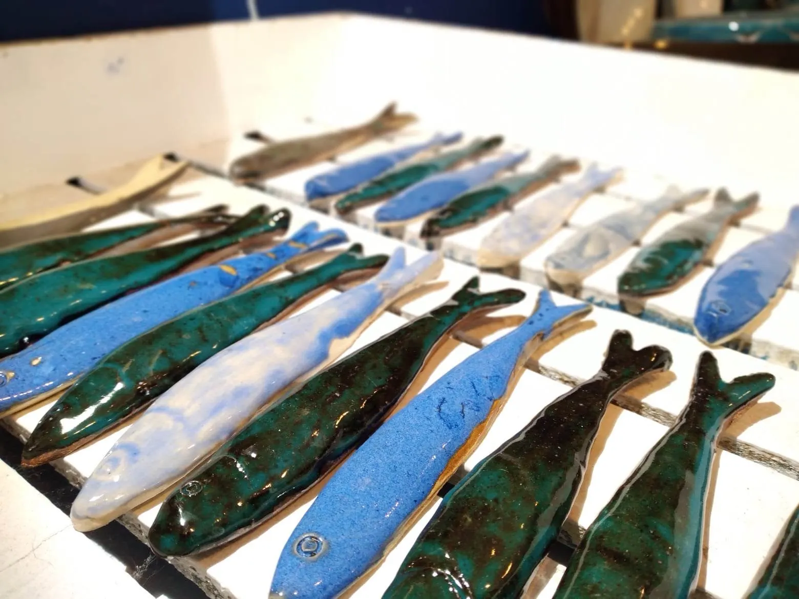
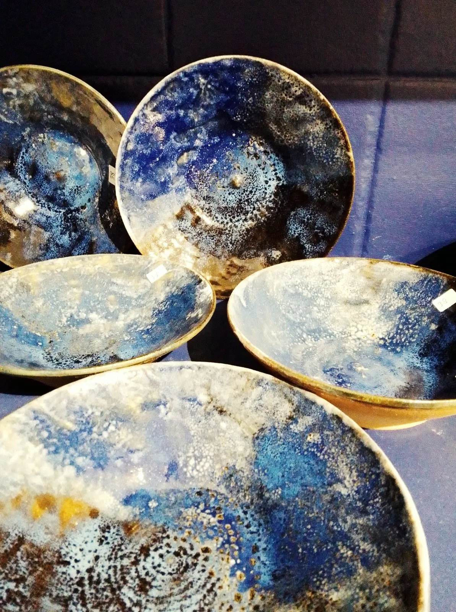
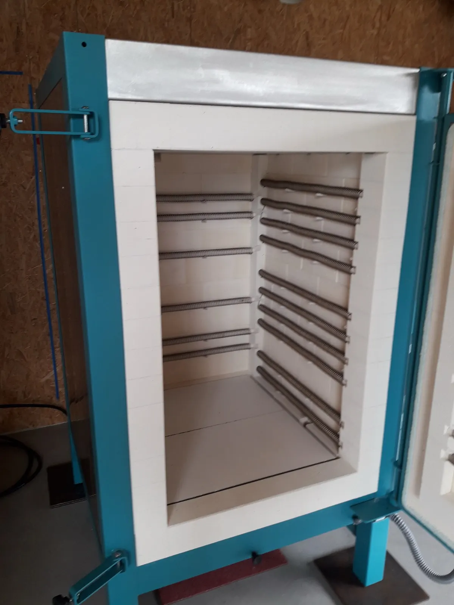
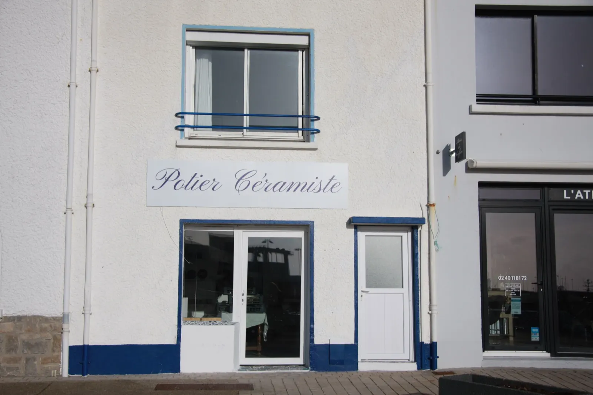

Le grès tourné à la main, de Guérande à La Turballe


Sébastien Jarno façonne une céramique utilitaire et artistique en grès, émaillée de ses propres couleurs, vendue dans sa boutique de La Turballe. Dans une chaumière en Brière, il donne des cours de tournage pour tous les niveaux, et il installe et répare les fours de céramique.
- Depuis 2016des cours de tournage pour tous les niveaux
- 5 toursdans la chaumière du Petit Poissevin
- Émaux maisonet cuisson au gaz, pour faire varier les couleurs
- Rhode et Naberthermvente, installation et dépannage de fours
Un potier qui fabrique aussi ses couleurs
Diplômé d'un CAP tournage, Sébastien Jarno façonne au tour une céramique en grès, utilitaire et artistique. Il développe à l'atelier ses propres émaux, qu'il décline en plusieurs couleurs, et cuit ses pièces au gaz pour une plus grande variation des teintes.
Toute sa fabrication est faite pour l'usage alimentaire. Il produit toutes sortes de formes et de couleurs, et réalise aussi des pièces uniques sur commande.
- Bols
- Vases
- Saladiers
- Coupelles
- Crédences sur commande
- Vasques sur commande


Ce que j'aime, c'est le mélange des matières, la création, le tournage, et l'étape où je vais créer la couleur, imaginer celle qui va ressortir.
Sébastien Jarno
Les cours de tournage, sous le chaume
Initiation ou perfectionnement, toute l'année, sur inscription. Les cours ont lieu à deux minutes du centre de Guérande, dans une chaumière en plein cœur du parc naturel régional de Brière : 1 route de Trénévé, au Petit Poissevin. Chaque cours dure deux heures, cinq tours sont à disposition.

Les formules
Pendant les vacances scolaires
L'atelier propose aussi des stages de tournage et de modelage, pour tous les niveaux, au Petit Poissevin.
« Très belle expérience de tournage auprès d'un potier calme et attentif, qui a également su transmettre son savoir-faire avec patience à mon neveu de 6 ans. »
Élise Foliard, avis GoogleBleus, bruns, verts canard : ses émaux
Bols, vases boules, soliflores, coupes et poissons en grès, à voir à la boutique de La Turballe. Toutes ses créations en photos




Les fours de potier, vendus et installés
Sébastien Jarno vend, livre, installe et répare les fours professionnels des marques Rhode et Nabertherm. Il se déplace dans tout le grand Ouest.
- Conseil et ventefours, tours et matières premières
- Livraison et installationchez le potier, dans l'atelier
- Dépannageréparation et suivi des fours
- Rhode et Naberthermles deux marques qu'il distribue
Des fours livrés ou installés à Étel, Angers, Noirmoutier, sur la presqu'île de Crozon ou à Brocéliande.
Les installations en photosDeux adresses, une seule terre
L'atelier en Brière pour les cours et le showroom, la boutique sur le quai de La Turballe pour la vente.
L'atelier
1 route de Trénévé, Petit Poissevin, 44350 Guérande
Cours de tournage, stages et showroom, dans la chaumière.

La boutique
7 quai Saint-Paul, La Turballe
Les céramiques en grès tournées à la main par le potier.
Un cours à réserver, une pièce sur commande, un four à installer : appelez Sébastien.